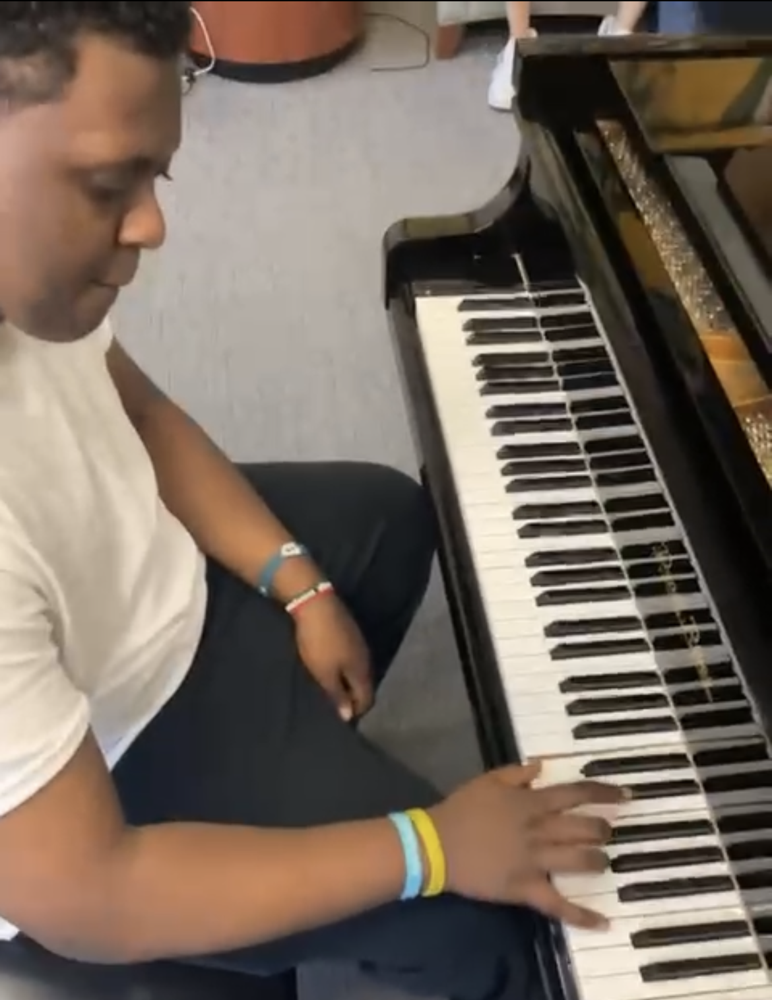
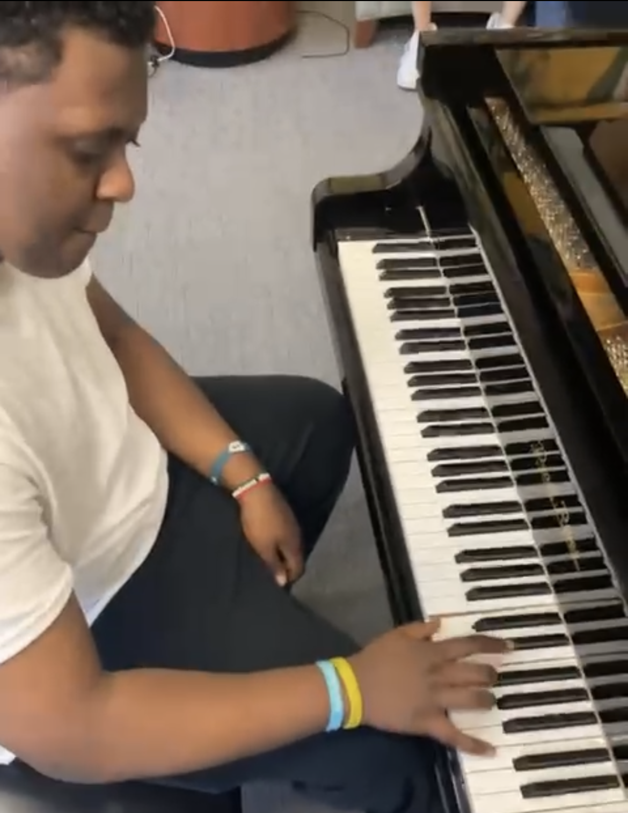

Welcome to My Hobby Site
About me
My name is Guled Duale and my hobby is learning/playing piano. I was born in Toronto and have lived in Chaerlotte for the last decade. I've been learning how to play independently for 2 years now.
When I Started
I started playing piano 2 years ago. The reason I started was because I wanted to play songs from shows/anime I was watching. It started off as a few riffs but I can now play semi-complete songs. Now I can listen to most songs and make a similar parody with a few chords here and there.
I started playing Naruto opening themes at first, but I slowly started to realize that I could put my own spin on them. From that point, I started making simple changes to the songs I was playing and learning different riffs. It gave me a sense of accomplishment making changes of my own.
Where I do my Hobby
I usually play my keyboard at my house. There have been times where I went to a friend’s house and played there, but I usually prefer to use my own setup. Keyboards are semi portable but can be a hassle to move, so it’s definitely a more stationary hobby in comparison to others.
 

There are other cases where I can use public pianos. For example, there are two pianos on campus that I can use: one in the union and one at cone center. The piano in the union is by far the better of the two, and I feel like the room echoes the sound much better.
How I do my hobby
I start off with a warmup which consists of me playing some of the basic riffs I know. Then I start playing around with different chords and improvising a bit. This is where most of the fun comes from. When you start improvising and adding your own style to songs you know, you can end up making completely different songs and parodies.

Why
I play piano for pure enjoyment. Learning something that’s just above my skillset gets me really engaged, so I continuously increase the difficulty level of the songs I learn to keep me motivated. The best feeling is finally finishing a song I’ve been working on for weeks on end.
I also love returning to my roots and playing openings from Naruto from time to time, specifically Naruto Opening 1 (Wind). The song brings back so many memories of a time where I didn’t have to worry about anything except my homework and lunch. Just playing this song can make my day better sometimes.